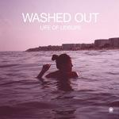

Music Reviews
-
Broken Bells Broken Bells
The Shins' James Mercer meets Danger Mouse. A perfect duo or a mismatch?
Brett Oronzio reviews... -

Black Rebel Motorcycle Club Beat The Devils Tattoo
Black Rebel Motorcycle Club return with their sixth studio album. Is it decent and passable? Yes. Is it great? Of course not.
Andrew Baer can play this album at a very high volume in the car but would never put it on anywhere else... -

Washed Out Life Of Leisure
Life Of Leisure is a record that resembles a woozy Technicolor frolic through a field of opiates. Give it a listen - you know you want to...
Lukas Clark-Memler reviews... -

Pantha Du Prince Black Noise
Hendrick Weber's first release for Rough Trade dissapointingly throws a few spanners in the works.
Jody White reviews... -

The Morning Benders Big Echo
Gotta love a band whose name implies alcoholism...
Ryan Faughnder reviews... -

Tunng ...And Then We Saw Land
A mix of folk and electronica is all well and good - but what happens when you don't have the tunes?
Joe Rivers pretty much forgets what just happened... -
Yeasayer Odd Blood
Odd Blood's peaks simply can't compensate for its valleys.
Michael Skinnider reviews... -

Peter Gabriel Scratch My Back
It's no "Shock The Monkey". It's not even "In Your Eyes".
Chris Coplan reviews... -

The Besnard Lakes The Besnard Lakes Are the Roaring Night
The Montreal sextet's epic new album ups the ante by expanding their psychedelic tendencies to a grand scale.
Juan Edgardo Rodriguez may have the cure for modern rock in his hands... -
Ted Leo and the Pharmacists Brutalist Bricks
Ted Leo's latest full length is a sloppy and uneven disappointment.
Gabbie Nirenburg reviews...